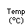
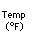
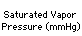
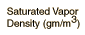

Saturated Vapor Pressure, Density for Water
|  |  |  |  | | | | |
| -10 | 14 | 2.15 | 2.36 | 40 | 104 | 55.3 | 51.1 |
| 0 | 32 | 4.58 | 4.85 | 60 | 140 | 149.4 | 130.5 |
| 5 | 41 | 6.54 | 6.8 | 80 | 176 | 355.1 | 293.8 |
| 10 | 50 | 9.21 | 9.4 | 95 | 203 | 634 | 505 |
| 11 | 51.8 | 9.84 | 10.01 | 96 | 205 | 658 | 523 |
| 12 | 53.6 | 10.52 | 10.66 | 97 | 207 | 682 | 541 |
| 13 | 55.4 | 11.23 | 11.35 | 98 | 208 | 707 | 560 |
| 14 | 57.2 | 11.99 | 12.07 | 99 | 210 | 733 | 579 |
| 15 | 59 | 12.79 | 12.83 | 100 | 212 | 760 | 598 |
| 20 | 68 | 17.54 | 17.3 | 101 | 214 | 788 | 618 |
| 25 | 77 | 23.76 | 23 | 110 | 230 | 1074.6 | ... |
| 30 | 86 | 31.8 | 30.4 | 120 | 248 | 1489 | ... |
| 37 | 98.6 | 47.07 | 44 | 200 | 392 | 11659 | 7840 |
Below are some selected values of temperature and the saturated vapor pressures required to place the boiling point at those temperatures. The pressures are stated in mega-Pascals, where a Pascal is a Newton per square meter, and as a multiple of standard atmospheric pressure.
Temperature
(°C) | Pressure
(MPa) | Pressure
(Atmospheres) |
| 100 | 0.101325 | 1 |
| 150 | 0.4762 | 4.700 |
| 200 | 1.55 | 15.297 |
| 250 | 3.976 | 39.24 |
| 300 | 8.588 | 84.757 |
| 350 | 16.529 | 163.13 |
| 373.946 | 22.064 | 217.75 |
|
Index
Kinetic theory concepts
Applications of kinetic theory
Vapor application concepts |